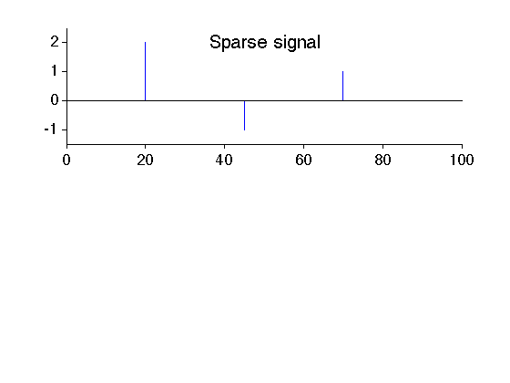
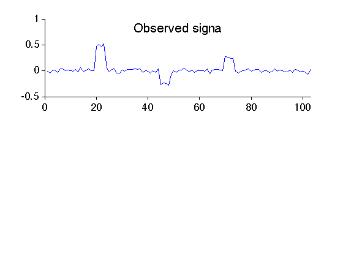
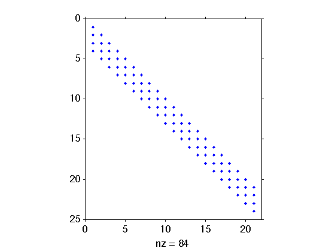
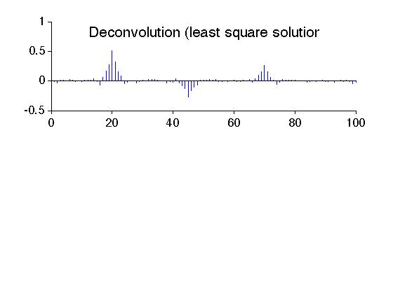
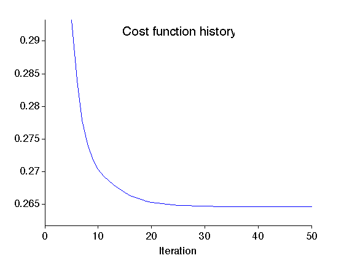
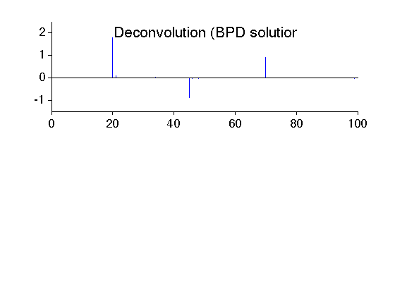

Example: Deconvolution using BPD
Deconvolution of a spike signal using basis pursuit denoising.
Ivan Selesnick NYU-Poly selesi@poly.edu March 2012
Contents
Start
close all clear MyGraphPrefsON printme = @(txt) print('-deps', sprintf('figures/Example_deconv_%s',txt)); randn('state',0); % set state so as to exactly reproduce example
Create spike signal
N = 100; % N : length of signal s = zeros(N,1); k = [20 45 70]; a = [2 -1 1]; s(k) = a; figure(1) clf subplot(2,1,1) stem(s, 'marker', 'none') box off mytitle('Sparse signal'); ylim1 = [-1.5 2.5]; ylim(ylim1) xlabel(' ') printme('original')
Create observed signal
The simulated observed signal is obtained by convolving the signal with a 4-point impulse response and adding noise.
L = 4; h = ones(L,1)/L; % h : impulse response M = N + L - 1; w = 0.03 * randn(M,1); % w : zero-mean Gaussian noise y = conv(h,s) + w; % y : observed data figure(2) clf subplot(2,1,1) plot(y) box off xlim([0 M]) mytitle('Observed signal'); xlabel(' ') printme('observed')
Create convolution matrix H
Create the convolution matrix using Matlab sparse matrix functions 'sparse' and 'spdiags'. By making it a sparse matrix, H uses less memory; multiplying vectors by H will is also faster.
H = sparse(M,N); e = ones(N,1); for i = 0:L-1 H = H + spdiags(h(i+1)*e, -i, M, N); % H : convolution matrix (sparse) end issparse(H) % confirm that H is a sparse matrix
ans =
1
Verify that H*s is the same as conv(h,s)
err = H*s - conv(h,s);
max_err = max(abs(err));
fprintf('Maximum error = %g\n', max_err)
Maximum error = 0
Display structure of convolution matrix. Note that the matrix is banded (sparse).
figure(1) clf spy(H(1:24,1:21))
Least square solution
Find the least square solution to the deconvolution problem.
lambda = 0.4; % lambda : regularization parameter x_L2 = (H'*H + lambda*speye(N)) \ (H' * y); % x_L2 : least square solution figure(2) clf subplot(2,1,1) stem(x_L2, 'marker', 'none') box off mytitle('Deconvolution (least square solution)'); xlabel(' ') printme('L2')
Basis pursuit denoising (BPD) solution
Find the BPD solution to the deconvolution problem
% Define algorithm parameters lambda = 0.05; % lambda : regularization parameter Nit = 50; % Nit : number of iterations mu = 0.2; % mu : ADMM parameter % Run BPD algorithm [x_BPD, cost] = bpd_salsa_sparsemtx(y, H, lambda, mu, Nit);
Display cost function history of BPD algorithms
figure(1) clf plot(cost) mytitle('Cost function history'); xlabel('Iteration') it1 = 5; del = cost(it1) - min(cost); ylim([min(cost)-0.1*del cost(it1)]) xlim([0 Nit]) box off printme('CostFunction')
The BPD solution is quite similar to the original signal (much more so than the least square solution).
figure(2) clf subplot(2,1,1) stem(x_BPD, 'marker', 'none') box off ylim(ylim1); mytitle('Deconvolution (BPD solution)'); xlabel(' ') printme('BPD')
MyGraphPrefsOFF